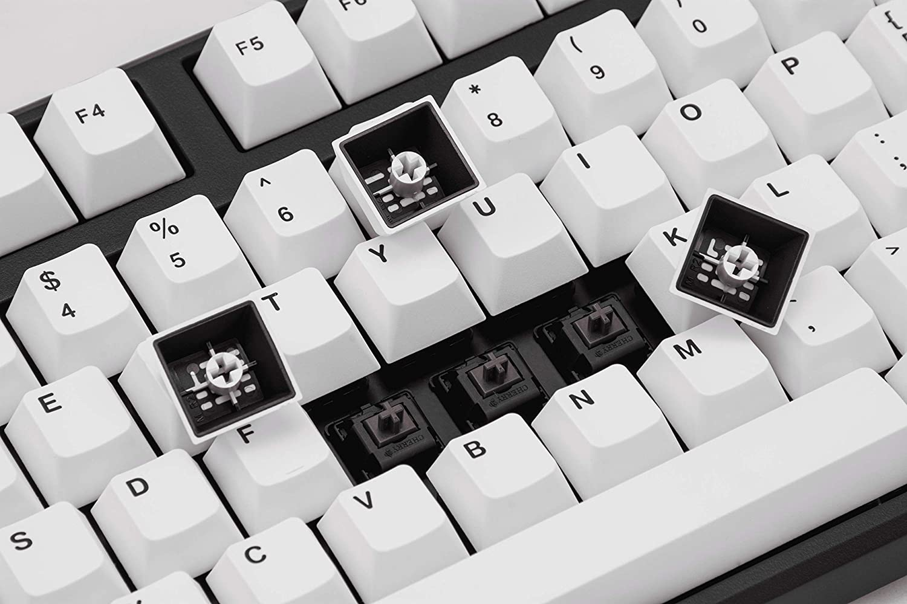

Um teclado mecânico típico é composto por sete componentes principais: PCB, caixa, placa, switches, cabo e teclas (keycaps). De todos esses componentes, as teclas dominam o aspecto visual do design do teclado, além de responderem pela maior parte do custo em teclados mecânicos personalizados de última geração. No entanto, seu impacto não se restringe apenas à estética ou ao custo eles também ditam os mais importantes critérios de ergonomia, sensação de digitação e som para teclados mecânicos. Todavia, saber reconhecer os tipos de keycaps para teclado mecânico que existem é essencial para que possa escolher aquele que melhor se adapta às suas necessidades. Portanto, conheça hoje o que são os keycaps, quais perfis existem e como escolher o seu.
O que são os keycaps?
Uma keycap é a cobertura plástica na parte superior de cada switch que identifica a letra ou o símbolo inserido no computador. Os usuários casuais se contentam com as teclas padrão, mas os entusiastas do teclado geralmente trocam as teclas para opções personalizadas. Jogadores e profissionais que usam seus teclados geralmente preferem um teclado mecânico a um teclado de membrana. Os teclados mecânicos têm switches e contatos individuais sob cada tecla, enquanto os teclados de membrana usam uma camada de membrana contínua que corre abaixo de cada tecla para registrar as teclas. Ambos os tipos de teclado são apropriados para digitação, mas muitos usuários preferem a sensação, o estilo e o som dos switches mecânicos. As placas mecânicas também oferecem muitos switches diferentes para escolher, permitindo que os usuários melhorem sua precisão e velocidade com base em sua preferência de switches. A distinção entre os dois tipos de teclado é importante se você deseja personalizar seu teclado no futuro. Os teclados mecânicos permitem mais personalização e trocas de teclas. O desgaste regular danifica as teclas ao longo do tempo. As principais lendas podem ficar sem graça ou desgastadas, mas trocá-las é relativamente fácil na maioria dos teclados mecânicos.
Melhores materiais de keycap para teclado mecânico
No mundo dos keycaps, existem realmente dois tipos principais de materiais que você pode obter; ABS (Acrilonitrila Butadieno Estireno) e PBT (Tereftalato de Polibutileno). Você pode estar se perguntando, o que é ABS e PBT? Bem, são dois tipos diferentes de plástico com propriedades de qualidade diferentes. Ambos os tipos de plástico têm uma sensação, som e aparência diferentes. Vamos ver quais são as diferenças e qual é melhor.
Teclas ABS vs PBT
As teclas ABS são o plástico mais barato e mais comum usado para as teclas. As teclas ABS são produzidas em massa devido à facilidade com que são moldadas por injeção. O plástico PBT é menos comum, mas geralmente é de qualidade superior ao ABS. As teclas ABS são suaves e desenvolvem um brilho oleoso ao longo do tempo, enquanto as teclas PBT são texturizadas e mais duráveis. O PBT é considerado superior ao ABS por ser mais durável e menos desgastado com o tempo. Dito isto, existem alguns conjuntos de teclas ABS muito bons disponíveis e, no final das contas, tudo se resume à preferência do usuário. Algumas pessoas preferem a sensação suave do ABS, enquanto outras gostam da sensação texturizada do PBT. O quadro abaixo apresenta as principais características de cada tipo de material, confira!
Outros materiais de Keycap
Vale a pena notar que existem outros estilos de keycaps, mas eles são muito menos comuns e às vezes mais caros. Estilos de keycap, como borracha e latão, podem ser difíceis de encontrar e comprar. Normalmente, você precisará encomendá-los por meio de uma compra em grupo para obtê-los.
Keycaps para teclados mecânicos retroiluminados (RGB)
Se o seu teclado não tiver iluminação RGB, você não precisa se preocupar em comprar teclas de disparo duplo ou pudim, pois esses estilos de teclas permitem que a luz de fundo brilhe. Mas se você tiver RGB, definitivamente vale a pena considerar um desses designs de keycap. Sem RGB, um simples keycap de disparo único funcionará perfeitamente bem para você. Na verdade, algumas teclas com os designs mais legais são de disparo único, porque são feitas para teclados amadores que tendem a não ter luz de fundo RGB.
Teclas de disparo duplo (double shot)
Os keycaps de double shot (tiro duplo, em tradução literal) são feitos a partir de um processo de fabricação mais complicado, onde dois plásticos separados são moldados por injeção para fazer o keycap. Se o seu teclado tiver iluminação para cada tecla individual, esses estilos de keycaps são usado para que a luz de fundo possa iluminar as legendas e torná-las mais fáceis de ler. As teclas de double shot estão disponíveis em plásticos PBT e ABS. Como no video abaixo voce pode observar keycap THOCK
Fonte: Youtube